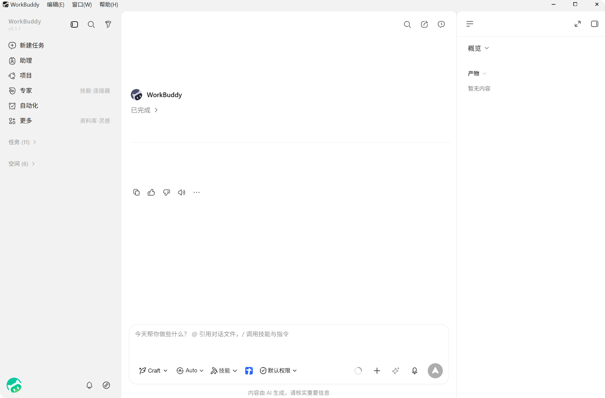
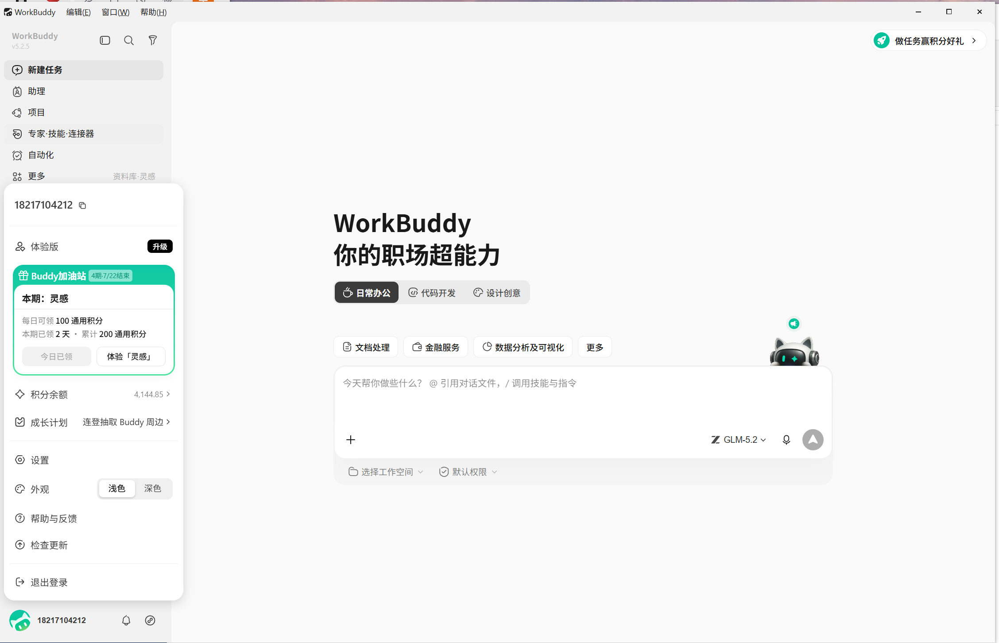
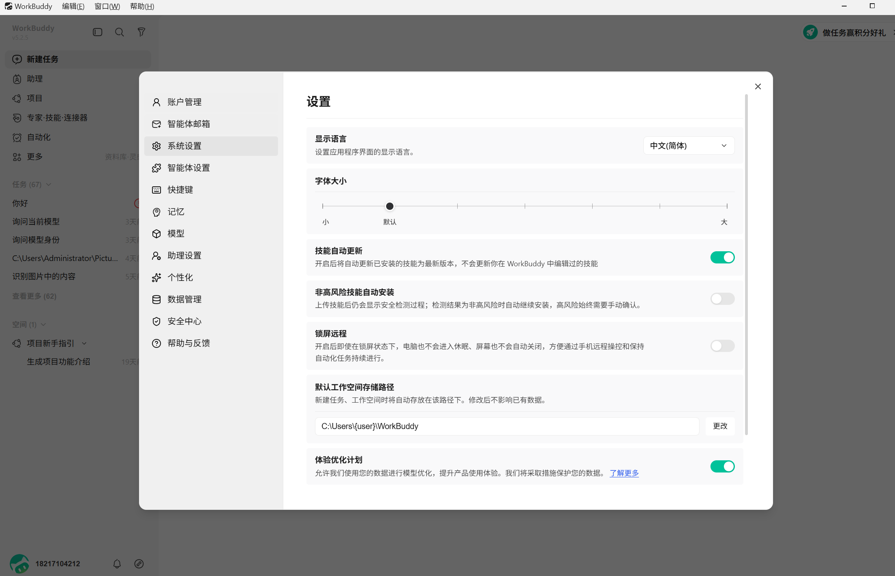

HuanXing-Hermes × WorkBuddy 风格界面改造设计文档
1. 背景与目标
HuanXing-Hermes 当前界面是"工程仪表盘"范式：顶部 4 个编号 Tab（01 工作台 / 02 配置 / 03 消息接入 / 04 高级）+ 随 Tab 切换的左侧栏 + 底部状态栏，首页为五段编号 Section 的仪表盘，整体风格偏终端/工程感（§编号、占位计数、状态网格）。
本设计的目标是把整个界面改造为 WorkBuddy（腾讯 AI 办公工作台）范式：
- 任务导向：一句话创建任务，AI 自主规划执行，交付可验收的产物；而不是"配置先行、会话为辅"。
- 三栏布局：左侧任务列表 / 中间对话区 / 右侧结果区（产物·文件·变更·预览），所有工作在同一界面闭环。
- 功能归位：技能、连接器、专家、自动化、灵感、助理、项目等能力有统一、低门槛的入口。
参考素材：腾讯 CodeBuddy 官方文档本地镜像（workbuddy/ 目录，93 页含界面截图）。
2. WorkBuddy 界面范式分析
2.1 整体布局


左侧栏（约 240px，浅色）：品牌+版本号 → 折叠/搜索/筛选 → 固定导航项（新建任务、助理、项目、专家、自动化、更多［技能·连接器 / 资料库·灵感］）→ 任务分组（任务 N、空间 N，按工作空间分组）→ 底部用户头像、通知、链接。
中间对话区：顶部任务标题栏（对话内搜索、分享、历史提问、详情面板开关）→ 消息流（AI 回复、阶段说明、可展开中间步骤、内嵌产物卡片）→ 底部 Composer。
Composer 工具条（核心交互密度集中在这里）：
- 工作模式：问一问 Ask（只读问答）/ 做一做 Craft（直接执行改文件）/ 想一想 Plan（先出计划再执行）
- 模型选择：Auto 自动 + 内置模型 + 自定义模型
- 技能：下拉选择已安装技能（/ 斜杠调用）
- 工作空间：选择任务目录，未指定则自动创建独立目录
- 权限：默认权限（高风险操作二次确认）/ 完全访问权限（免确认，谨慎）
- ＋附件（上传/拖拽/粘贴截图，@ 引用文件）、语音输入、发送/停止
右侧结果区（可从标题栏开合）：概览（工作空间文件树+文件内容）、产物（任务交付物：文档/表格/PPT/网页，支持预览与分享）、变更（文件修改差异对比）、浏览器（内置预览生成的网页）。
2.2 功能地图（来自官方文档功能说明）
| 功能 | 要点 | 入口 |
|---|---|---|
| 任务管理 | 任务/空间两板块；状态：进行中·已完成·失败·待处理·规划中·已归档；置顶/重命名/归档/删除/打开文件夹/分享 | 左侧栏 |
| 工作模式 | Ask / Craft / Plan 三档 | Composer |
| 技能 Skill | 技能市场（一键安装）+ 已安装（启用/关闭/卸载）；支持上传技能包、描述查找、自然语言创建 | 侧栏"更多" / Composer |
| 连接器 | QQ邮箱·腾讯文档·乐享·TAPD·网盘等卡片式授权管理；自定义连接器（MCP） | 侧栏"更多" |
| 专家/专家团 | 角色化专家（人设+方法论），专家团自动拆解并行协作 | 侧栏 |
| 自动化 | 定时任务（prompt+频率+工作目录+模型技能），执行记录，模板 | 侧栏 |
| 灵感 | 精选案例"做同款"，自动预填 Prompt/Skill/专家 | 侧栏"更多" |
| 助理 | IM 远程控制（微信/企微/QQ/钉钉/飞书/元宝），远程任务记录 | 侧栏 |
| 项目 | 团队协作：指令/连接器/专家/技能共享注入，资产库（RAG），任务流转 | 侧栏 |
| 记忆 | 每晚从会话抽取偏好事实，可查看/编辑/删除/导入 | 头像-设置 |
| 模型配置 | Auto 自动模式 + 内置模型 + 自定义模型（可视化增删改，API Key 仅本地） | Composer / 设置 |
| 权限模式 | 默认权限（敏感路径/删除/脚本/网络 二次确认 + 沙箱/删除保护/文件备份）/ 完全访问 | Composer |
| 数据管理 | 我分享的文件、已归档任务 | 设置 |
| 系统设置 | 语言/字体/显示模式/简洁模式/防休眠 | 头像-设置 |
3. 现状与差距分析
3.1 本项目现状（关键事实）
| 层 | 现状 | 位置 |
|---|---|---|
| 布局壳 | 四区网格：AppTopBar（4 编号 Tab + ⌘K + ProfileSelector + 主题）/ AppSidebar（随 Tab 切换 4 套）/ 主区 / AppStatusBar（端口·模型·上下文·错误数） | web/src/components/app-shell/ |
| 首页 | 仪表盘：统计横幅 + §01 新任务 Composer + 健康网格 + 运行中卡片 + 最近会话 + 模板 | web/src/routes/panel.tsx |
| 会话页 | MessageTimeline + GooseComposer（模型/技能/图片）+ PreviewRail（文件/日志/终端/web/git review 5 tab）+ SubagentPanel + ApprovalDialog | web/src/routes/detail.tsx |
| 任务抽象 | 有 session（对话）无"任务"：无状态机、无产物概念、无归档/置顶元数据 | stores/chat.ts、gateway session.* |
| 设置 | 路由式设置（/common /config /connection /kernel /env /about …），表单式 Section | web/src/routes/advanced.tsx |
| 已有能力 | skills、memory（MEMORY.md）、terminal、cron、backup、notify、preview、im_onboarding（飞书/钉钉/企微/微信）、profiles、runtime_manager、git worktree/review、yolo（免确认）、mcp、analytics | src/commands/ 60 个 command |
| 设计体系 | shared-ui tokens（6 套主题 + 密度 + HarmonyOS Sans）+ CSS Modules | packages/shared-ui/tokens/ |
3.2 能力映射与差距矩阵
| WorkBuddy 概念 | 本项目对应能力 | 差距 / 策略 |
|---|---|---|
| 任务（状态机/置顶/归档/重命名） | session（创建/恢复/改名/压缩）+ session_archive.rs | 新增任务元数据层（status/pinned/archived/workspacePath），存 ui_store，P2 起可由 Core 承担 |
| 三栏布局 | 会话页已有 PreviewRail（5 tab） | 改造PreviewRail → 结果区（产物/工作空间文件/变更/浏览器 4 tab），去掉日志/终端 tab（移入 /console） |
| 产物 | 无。有 preview watch、git review、工作区文件读写 IPC | 新增产物收集：从 gateway 事件提取写文件记录 + 工作目录新文件监听 |
| 工作模式 Ask/Craft/Plan | 无显式模式；有 ApprovalDialog 确认流 | 新增模式选择器：Ask=禁用写工具，Plan=先出计划确认后执行（依赖 Core 支持），Craft=现状 |
| 权限模式（默认/完全访问） | yolo-mode（免确认开关） | 改造yolo 提升为 Composer 级"权限下拉"（默认权限↔完全访问），文案与交互对齐 |
| 技能（市场+已安装） | /skills 页 + bundled-skills + Composer 斜杠 | 改造分两 Tab：技能市场 / 已安装；补"上传技能包/描述创建"入口 |
| 连接器 | /mcp 页 + bundled-plugins | 改造卡片化（连接状态绿点+授权开关+解绑），自定义连接器=MCP 配置 |
| 自动化 | /cron 页 + cron_runs.rs | 改造更名"自动化"，补模板与执行记录视图（cron_runs 已有数据） |
| 记忆 | /memory 页（MEMORY.md 读写） | 改造移入设置中心；编辑改为"对话式编辑"可后置 |
| 模型配置（Auto+自定义） | /models 页 | 改造加 Auto 档（若无后端支持则前端映射默认模型）；入口收进设置中心+Composer 联动 |
| 助理（IM 远程） | im_onboarding（飞书/钉钉/企微/微信向导） | 改造更名"助理"，收进设置中心"助理设置"+ 侧栏入口 |
| 空间（按工作目录分组任务） | /projects 项目列表（workspacePath 维度） | 合并项目页保留为"空间"分组数据源，任务列表按空间分组 |
| 灵感 / 专家 / 项目协作 / 分享链接 / 云端网盘 | 无（soul/subagents 可近似专家） | 后端依赖需 Hermes-CN-Core 提供对应 API，P4 再议 |
4. 目标信息架构
4.1 布局壳：从"Tab 仪表盘"到"工作台三栏"
取消 AppTopBar 的 4 个编号 Tab 和 AppStatusBar，改为 WorkBuddy 式固定左栏 + 主区。状态信息（网关端口/模型/连接状态）下沉到"设置-关于"和 Composer 模型选择器。
┌─────────────────────┐
│ 📄 周报汇总-7月第3周.docx ↗ │
└─────────────────────┘
查看所有产物 (2) · 查看所有变更 (3)
预览 · 打开所在文件夹
* 灵感/专家/项目等依赖后端的能力以灰显入口或"敬请期待"方式预留。
4.2 目标路由表
| 新路由 | 页面 | 来源 / 说明 |
|---|---|---|
/ | 新建任务首页（Hero 大标题 + 模式 Tab + 场景入口 + 大 Composer） | 由 panel.tsx 简化：砍掉统计横幅/健康网格/§编号，见 5.2 |
/tasks/:taskId | 任务对话页（三栏） | 由 detail.tsx 改造，右侧 PreviewRail → 结果区 |
/assistant | 助理（远程任务记录 + 接入引导入口） | im-onboarding 更名归位；记录视图后续依赖 Core |
/automation | 自动化（定时任务 + 模板 + 执行记录） | cron.tsx 改造，cron_runs 数据已有 |
/skills | 技能（技能市场 / 已安装 两 Tab） | skills.tsx 改造 |
/connectors | 连接器（卡片 + 授权状态 + 自定义=MCP） | mcp.tsx 改造 |
/console | 终端（保留，入口收进设置-高级） | 现状保留 |
/settings/<pane> | 设置弹窗（模态对话框，非独立页面）：深链仅用于打开主界面并自动弹出对应面板，兼容旧书签 | advanced.tsx 重组为弹窗面板，见 5.8 |
/guide | 首次启动引导 | 保留，视觉对齐新风格 |
4.3 页面映射（旧 → 新）
| 旧路由/模块 | 处置 | 去向 |
|---|---|---|
/ panel 仪表盘（§01–§05） | 改造 | 新建任务首页（保留 PanelComposer + 模板段） |
/tasks/:taskId detail 会话页 | 改造 | 三栏任务对话页 |
/history | 合并 | 左栏任务列表（搜索/筛选/置顶/归档）；批量管理进设置-数据管理 |
/kanban | 下线 | 任务状态由列表状态标签承担；如需看板视图 P4 再议 |
/projects | 合并 | 左栏"空间"分组；项目详情保留为空间详情（P2） |
| 顶部 4 Tab + AppStatusBar | 下线 | 固定左栏导航；状态信息进账号弹窗状态卡（5.7）与设置弹窗-帮助与反馈 |
顶部 02 配置 Tab 全部（/skills /models /voice /mcp /profiles /memory /soul） | 改造 | 技能/连接器保留为左栏"更多"页面；模型/记忆/语音/人格/Profile 全部收进设置弹窗对应面板（5.8） |
顶部 04 高级 Tab 全部（/health /analytics /logs /debug /env /coding-agents /backup /config-migration /common /notifications /theme /config /connection /kernel /about /console） | 保留 | 收进设置弹窗的"高级 / 可观测 / 帮助与反馈"分区，不对普通用户外露（5.8） |
| 灵感 / 专家 / 项目协作 / 分享 | 后端依赖 | P4：需 Hermes-CN-Core 提供 API |
5. 详细设计
5.1 布局壳 AppShell 重写
app-shell.tsx：四区网格 → 两区（固定左栏 240px + 主区）。删除app-top-bar.tsx、app-status-bar.tsx、use-active-top-tab.ts。- 新
TaskRail（左栏）：品牌区、折叠/搜索/筛选、固定导航（新建任务/助理/自动化/技能/连接器/灵感*）、任务分组列表（任务 / 空间）、底部账号区域（头像+名称，点击弹出账号弹窗，见 5.7）。 - 任务列表数据源：复用
use-sessions（TanStack Query）+ 新任务元数据 atom（见 6.1）；分组规则：进行中置顶 → 按更新时间倒序；"空间"按 workspacePath 聚合（数据来自 projects 现有接口）。 - 列表项操作（右键/hover 菜单）：置顶、重命名（gateway
setSessionTitle已有）、归档、删除、打开文件夹（hermesDesktop.openWorkspace已有）。 - 搜索/筛选：标题关键词 + 状态下拉（进行中/已完成/失败/待处理/规划中/已归档），状态来源见 6.2。
5.2 新建任务首页（/）
- 结构对齐 WorkBuddy 实拍首页（5.7 图）：Hero 大标题（产品名+一句话主张）→ 模式 Tab → 场景入口 → 居中大 Composer。
- 模式 Tab：日常办公 / 代码开发 / 设计创意*。本质是新任务的"预置包"：日常办公=Craft 模式+办公技能组；代码开发=Craft 模式+编程 Agent 上下文（复用 /coding-agents 配置）；设计创意=预留（后端依赖，灰显）。选中态写入 Composer 预填（
composerPrefillatom 已有）。 - 场景入口：文档处理 / 数据分析及可视化 / 更多…（chip 形式，点击=预填 prompt 模板，沿用 §05 模板数据，去掉 §编号）。
- Composer：复用
PanelComposer提交逻辑，占位文案"今天帮你做些什么？"；工具条同 5.3（模式/模型/技能/工作空间/权限）。 - 发送后创建 session → 跳转
/tasks/:id；未选工作空间时使用"系统设置-默认工作空间存储路径"（5.8），未配置则由 Core 自动建任务目录（现状行为保留）。 - 页面不再显示健康网格/统计横幅；这些信息移入设置弹窗"帮助与反馈/可观测"。
5.3 任务对话页（/tasks/:taskId，三栏）
- 中栏：标题栏（任务名可点击重命名 + 对话内搜索 + 历史提问 + 结果面板开关 ⌘B 保留）→
MessageTimeline（保留；简洁模式：折叠工具调用过程，默认开，对齐 WorkBuddy"简洁模式"）→GooseComposer扩展工具条。 - Composer 工具条（在 GooseComposer 上加一行选择器，数据均有来源）：
- 模式：Ask / Craft / Plan（6.3）
- 模型：现有模型选择器 + Auto 档
- 技能：现有斜杠/技能入口改下拉
- 工作空间：接入现有 workspace 选择（projects 数据 + 目录对话框）
- 权限：默认权限 ↔ 完全访问（映射 yolo；切换时二次确认弹窗，文案对齐 6.4）
- 右栏结果区（PreviewRail 改造）：
日志/终端 tab 从右栏移除（仍在 /console 可达）。新 Tab 来源 工作 产物 新增（6.5） 产物卡片列表：预览、打开所在文件夹、（分享留后端占位） 工作空间文件 PreviewRail files tab 保留文件树+内容查看 变更 PreviewRail git review tab 保留 diff 视图；无 git 的工作目录用"任务内新增/修改文件清单"兜底 浏览器 PreviewRail web tab 保留网页预览 - 消息流增强：产物内嵌卡片（文件名+图标+打开/预览）、阶段说明折叠条、"查看所有产物 (N) / 查看所有变更 (N)" 跳转链接（点击打开右栏对应 Tab）。
- SubagentPanel、ApprovalDialog 保留，视觉对齐新风格。
5.4 技能页（/skills）
- 两 Tab：技能市场（bundled-skills 列表卡片化 + 一键安装/启用）/ 已安装（启用开关、卸载、批量卸载）。
- 头部操作：上传技能包（文件对话框→bundled-skills 目录，复用现有 IPC）、查找技能、创建技能（后两者先以"描述→预填 Composer"实现，自然语言创建技能依赖 Core 时标注）。
5.5 连接器页（/connectors）
- mcp.tsx 卡片化：每个连接器一张卡（图标、简介、连接状态绿点、启用开关、解绑）；右上角"自定义连接器"= 现有 MCP 配置弹窗。
- 内置卡片数据来自 bundled-plugins 清单 + mcp 状态接口；授权流程保持现状（外部浏览器 OAuth）。
5.6 自动化页（/automation）
- cron.tsx 更名改造：任务列表（名称/频率/工作目录/下次执行/启用开关）+ 执行记录（cron_runs.rs 已有）+ 模板（每日简报/周报汇总等预填 prompt）。
5.7 账号区域弹窗（AccountPopup）
左栏底部为账号区域（头像 + 当前 Profile 名），点击后弹出账号面板。它是原顶部 02 配置 / 04 高级两个 Tab 全部功能的总入口，同时承接原状态栏的"一眼可见"诉求。结构对齐 WorkBuddy 真实应用（下图），按本项目情况裁剪。

- 结构（自上而下，对齐实拍）：账号卡（头像、Profile 名、网关连接状态点 + 端口 + 当前模型——原 AppStatusBar 核心信息在此保留）→ 菜单列表。
- 菜单项：设置（打开设置弹窗，5.8）、外观（浅色/深色分段开关，与实拍一致；完整 6 主题在设置弹窗"个性化"面板选）、切换 Profile（子菜单，原顶栏 ProfileSelector 迁入）、命令面板 ⌘K（原顶栏入口迁入）、帮助与反馈（文档链接、导出日志/调试包 log_export/debug_bundle）、检查更新（desktop_update）、重启/退出。
- 不引入项：实拍的套餐/升级、积分余额、成长计划、Buddy 加油站均为云账号商业化体系，本项目为本地应用，不引入；对应位置由 Profile 卡与网关状态替代。
- 交互：面板向上弹出覆盖任务列表区，点击外部或 Esc 关闭；复用
packages/shared-ui的composites/popover。
5.8 设置弹窗（SettingsDialog）
对齐 WorkBuddy 的设置形态（下图实拍）：模态覆盖层对话框（约 960×640，浅灰左菜单 200px + 白色内容区，右上角 ✕，Esc 关闭），不再是路由页面。/settings/<pane> 深链保留——命中时打开主界面并自动弹出对应面板，兼容旧书签与通知点击跳转。

左菜单与原功能的完整映射（22 个现有路由/模块全量覆盖，无一丢失）：
| 弹窗菜单 | 收纳的现有功能 | 内容来源 |
|---|---|---|
| 账户管理 | 当前 Profile、切换/新建 Profile（/profiles）、连接与登录（/connection 的 OAuth 区） | profiles.tsx + connection 部分 |
| 系统设置 | 语言（预留）、字体大小、通知 5 开关（/notifications）、防休眠（prevent_sleep，对应实拍"锁屏远程"）、UI 缩放（setUiZoom）、默认工作空间存储路径（对齐实拍；需 Core 支持配置默认任务目录）、技能自动更新（bundled-skills 更新策略） | common/notifications + ui atoms |
| 智能体设置 | 人格（/soul SOUL.md）、编程 Agent（/coding-agents）、语音（/voice） | soul/coding-agents/voice.tsx |
| 快捷键 | 全局/页面快捷键清单（⌘K 命令面板、⌘B 结果面板、发送/中断等），只读展示起步，预留自定义 | 新增（汇总现有快捷键） |
| 记忆 | MEMORY.md 查看/编辑 | memory.tsx |
| 模型 | 内置模型 + Auto 档 + 自定义模型增删改 | models.tsx |
| 助理设置 | 飞书/钉钉/企微/微信 接入向导 | im-onboarding.tsx |
| 个性化 | 显示模式（/theme 6 套主题 + 浅色/深色/跟随系统）、简洁模式（默认开）、对话宽度、密度 | theme + ui atoms |
| 数据管理 | 归档任务管理、分享占位（后端依赖）、备份（/backup）、配置迁移（/config-migration） | backup/config-migration.tsx |
| 安全中心 | yolo 全局默认值、高危确认规则说明（Composer 会话级权限的覆盖关系） | common 页 yolo 区 |
| 高级 | 内核 Runtime（/kernel + runtime_manager）、环境（/env）、配置编辑（/config）、连接高级区（/connection）、终端入口（跳转 /console） | kernel/env/config/connection.tsx |
| 可观测 | 健康（/health）、用量（/analytics）、日志（/logs）、调试事件（/debug） | 四页原样迁入 |
| 帮助与反馈 | 关于（版本/端口/运行状态）、桌面更新与 runtime 更新、文档链接、导出日志/调试包 | about.tsx + 更新组件 |
- 实现：弹窗骨架新建
components/settings/settings-dialog.tsx（左菜单 + 面板路由状态用 Jotai atom）；现有routes/advanced.tsx与各 settings Section 组件拆分为 pane 组件原样复用，只是宿主从路由页变成弹窗。 - 模型页加 Auto 档；自定义模型增删改沿用现有实现；添加模型沿用 WorkBuddy 式二级弹窗（弹窗上叠弹窗，dialog 组件支持）。
- 安全中心：yolo 全局默认值在此；Composer"权限"下拉为会话级覆盖（6.4），面板内说明两者关系。
5.9 视觉语言
- 沿用 shared-ui tokens，不另起色板；默认主题从当前默认切到
light-modern，圆角/留白按 tokens 的较大档（radius、spacing 语义变量，禁止硬编码）。 - 去除 §编号、占位计数、终端风装饰；导航文案用自然语言（"技能"而非"§021 技能"）。
- 密度
data-density默认 comfortable；对话宽度沿用现有档位。 - 暗色主题继续由
data-theme支持，入口移到头像弹出菜单。
6. 功能对齐与技术方案
6.1 任务元数据（TaskMeta）
- 结构：
{ sessionId, workspacePath?, status, pinned, archived, createdAt, updatedAt, title }。 - 存储：前端 ui_store（
lib/ui-store.ts已有 KV 持久化，Rust 端 ui_store.rs）；以 sessionId 为主键。后续 Core 提供任务 API 后迁移，前端读写收敛在stores/tasks.ts（新增），换后端只改这一层。 - 协议类型放
packages/protocol。
6.2 任务状态机映射
| 界面状态 | 判定来源（现状可及） |
|---|---|
| 规划中 | session 已创建、首条回复未返回 |
| 进行中 | gateway 事件流活跃（chatRuntimeBySessionAtom 已有运行标记） |
| 待处理 | ApprovalDialog 挂起 / 等待用户输入 |
| 已完成 | 本轮执行结束且无错误 |
| 失败 | gateway 错误事件 / RPC 超时 |
| 已归档 | TaskMeta.archived |
6.3 工作模式 Ask / Craft / Plan
- Craft = 现状（工具全开，按权限模式确认）。
- Ask = 会话级只读：发送时附带模式标记，Core 侧禁用写/执行类工具（后端依赖；前端先禁用附件写入类入口并标注）。
- Plan = 先产出执行计划，用户确认后转入执行（后端依赖；与 Core 的 plan 模式对齐后接入）。
- 模式标记随
sendPrompt传递（use-gateway.ts 增加参数，协议层加字段）。
6.4 权限模式
- Composer"权限"下拉：默认权限 / 完全访问。会话级覆盖，写入 TaskMeta。
- 完全访问 = 现有 yolo（跳过 ApprovalDialog）；切换开启时弹二次确认（风险说明 + 勾选确认），文案对齐 WorkBuddy 的谨慎引导。
- 发送时随模式一起传给 Core。
6.5 产物收集
- 来源 A（首选）：gateway 事件中的文件写入/编辑记录 → 前端聚合为产物清单（按 sessionId）。
- 来源 B（兜底）：任务工作目录的新增/修改文件监听（preview watch IPC 已有文件监听能力）。
- 产物操作：预览（右栏/系统打开）、打开所在文件夹（已有 IPC）；分享（上传云端/复制公开链接）标注 后端依赖。
6.6 改造点文件清单（前端为主）
| 文件 | 改动 |
|---|---|
web/src/components/app-shell/app-shell.tsx | 重写为"左栏+主区"；删除 top-bar/status-bar 引用 |
app-top-bar.tsx / app-status-bar.tsx / use-active-top-tab.ts | 删除（⌘K 命令面板与主题切换迁入左栏） |
app-sidebar.tsx → 新 task-rail.tsx | 固定导航 + 任务/空间分组列表（复用 WorkbenchSidebar 会话分组逻辑） |
web/src/app.tsx | 路由表按 4.2 重组；保留 OfflineShell/ErrorBoundary/guide 逻辑 |
routes/panel.tsx | 简化为新建任务首页（留 PanelComposer+模板） |
routes/detail.tsx | 三栏化：标题栏扩展、Composer 工具条、简洁模式折叠 |
components/chat/preview-rail.tsx | 改四 Tab（产物/文件/变更/浏览器），移除日志/终端 |
components/chat/goose-composer.tsx | 工具条：模式/模型/技能/工作空间/权限 选择器 |
stores/tasks.ts（新）+ stores/ui.ts | TaskMeta atoms + ui_store 持久化 |
hooks/use-gateway.ts / lib/gateway-client.ts | sendPrompt 增加 mode/permission 参数 |
components/settings/settings-dialog.tsx（新）+ account-popup.tsx（新） | 设置弹窗骨架（左菜单+pane 路由 atom）与账号弹窗；复用 shared-ui dialog/popover |
routes/skills.tsx / mcp.tsx / cron.tsx / im-onboarding.tsx | 按 5.4–5.6、5.8 改造（im-onboarding 改为设置弹窗"助理设置"面板） |
routes/advanced.tsx + 各 settings Section | 宿主从路由页拆分为设置弹窗 pane 组件，内容原样复用 |
packages/protocol | TaskMeta、产物、mode/permission 类型 |
src/commands/（Rust） | 基本不动；产物监听如需新 command 再补（沿用 preview watch 模式） |
6.7 需要 Hermes-CN-Core 配合的项
- Ask/Plan 模式的工具禁用与计划确认流；
- 任务元数据与状态的后端化（替代前端 ui_store 过渡方案）；
- 产物分享（公开链接/云端上传）；
- 灵感、专家/专家团、项目协作（P4）。
7. 分期实施计划
| 阶段 | 范围 | 验收标准 |
|---|---|---|
| P1 骨架与三栏 （纯前端，1–2 周） | AppShell 重写、TaskRail（任务列表+搜索+置顶/归档/重命名/打开文件夹）、新建任务首页、任务对话页三栏化、路由重组与旧路由重定向 | 全流程可走通：建任务→对话→右栏四 Tab；旧功能入口均可在设置弹窗找到；pnpm typecheck && pnpm test:unit 全绿 |
| P2 Composer 与产物 （前端为主，1–2 周） | Composer 工具条五选择器（Auto 模型、权限=yolo 会话级、工作空间）、产物收集与内嵌卡片、变更 Tab 兜底清单、简洁模式 | 权限切换有二次确认；产物可预览/打开所在文件夹；e2e 冒烟过 |
| P3 功能页归位 （纯前端，1 周） | 技能两 Tab、连接器卡片化、自动化（模板+执行记录）、账号弹窗 + 设置弹窗（原"配置/高级"两 Tab 全量迁入 11 个面板）、助理更名归位、主题/密度默认档 | 五个功能页新样式上线；无 §编号残留；设置弹窗 11 面板与原功能逐项核对无丢失；视觉走查过 |
| P4 新概念 （依赖 Core，排期另议） | Ask/Plan 模式接入、任务元数据后端化、分享、灵感、专家、项目协作 | 依赖 Core 版本能力逐项验收 |
8. 风险与开放问题
- 双仓联动：Ask/Plan、任务后端化、分享均需 Hermes-CN-Core 排期；前端过渡方案（ui_store 元数据）要保证后续可平滑迁移（读写收敛在 stores/tasks.ts）。
- 看板下线：/kanban 有既有用户，下线前在 P1 保留路由别名+P3 后评估是否以"任务视图"复活。
- Profile 体系：WorkBuddy 无 profile 概念；本项目 ProfileSelector 迁入账号弹窗子菜单与设置弹窗"账户管理"，普通路径不感知。
- 旧路由兼容：/history、/kanban、/models 等旧地址做 301 重定向；/settings/* 旧链接命中时自动弹出设置弹窗对应面板，避免用户书签失效。
- E2E：P1 完成后需补一轮 Playwright 用例（三栏布局、任务列表操作、权限切换确认弹窗）。